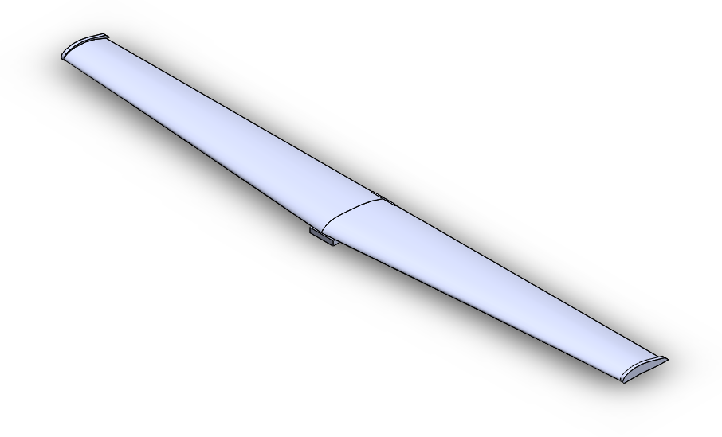
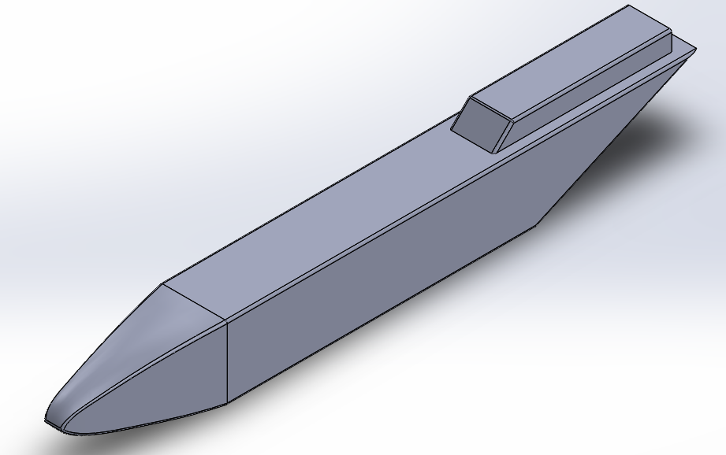
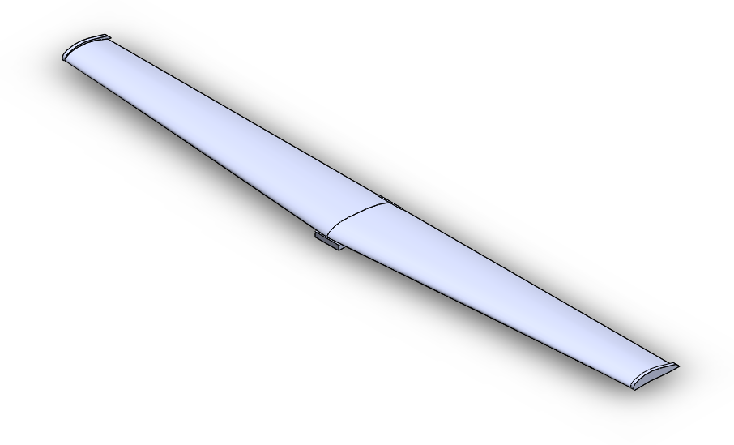
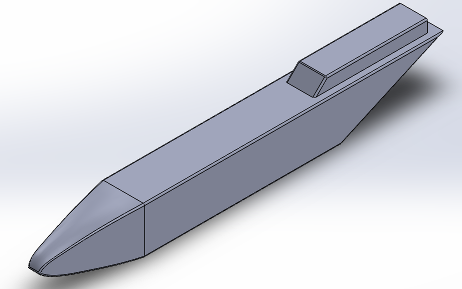

Project Overview

Testing UAVs in the field can be costly: not must you charge batteries, go through checklists, prepare the drone, transport people and materials to the testing site, and return everything to its place, there is the chance that the changes you have made will fail. Software-in-the-loop (SITL) simulation eliminates the need for physical tests but maintains the integrity of the testing environment by linking a flight dynamics model such as JSBSim to the autopilot, enabling rapid development and testing of UAV software.
However, current SITL simulations are typically run in the ideal environment, assuming perfect connections to the UAV and all its equipment. Additionally, there is no good way to test multiple missions in a row in varied environments to ensure a well-tested autopilot. Developing further on the deprecated work by Jayson Boubin, I modified the UAV FaultInjector to load, modify, and reset MissionPlanner Waypoint files, run multiple missions, and perform robust UAV testing in concert with open-source flight dynamics simulators.
Here is my code for the FaultInjector, here is a more detailed description of how to get SITL running, and here are the personal notes I kept while developing this project. Enjoy!
Setting up SITL
My first task was connecting the SITL physics simulator to a flight simulator for effective mission visualization. This ended up being no small task, as much of the documentation was quite outdated. For a more complete guide, please check out my Gist here.
 



{kind=link}
{kind=link}


I eventually ended up with a FlightGear visualization connected to my instance of JSBSim. It received missions through MAVProxy and MissionPlanner. With this implementation, you can create missions, run them in real-life locations, and see if the autopilot fails given certain conditions.
Fault Injection
Once I had SITL running on my computer, I decided to take the existing FaultInjector script and modify it to be able to:
- Load missions from a .txt file
- Run a SITL simulation
- Reset drone position after a completed mission
- Run multiple missions in succession
- Interface with existing Ground Control systems
{kind=link}
The rest of the battle came down to tuning; even though I had done a decent job scaling the aircraft, I needed to fiddle with the center of gravity, thrust provided by the motor, and lift the aircraft was generating. At the end of this project, we ended up with a really fantastic training tool to get new pilots comfortable with the dynamics of an airframe similar to what they'll actually be flying. I became more proficient in Solidworks, got to see simulated instability, and was able to see a project through to completion.